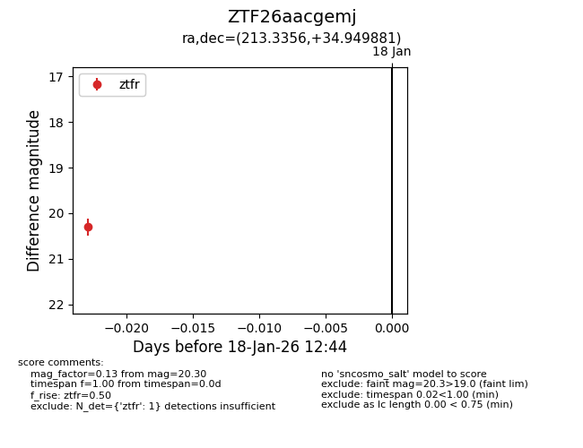
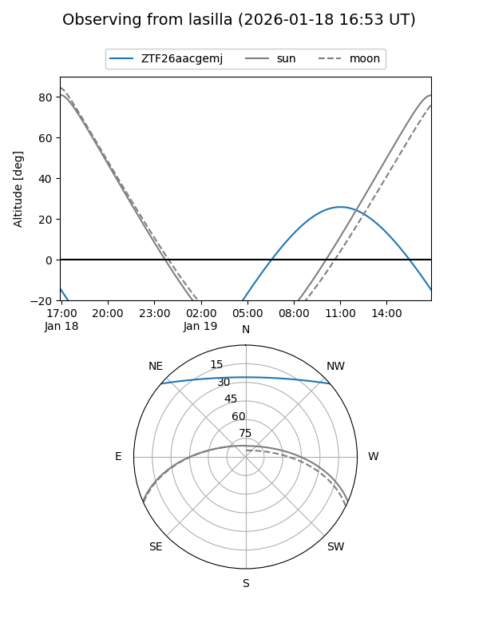
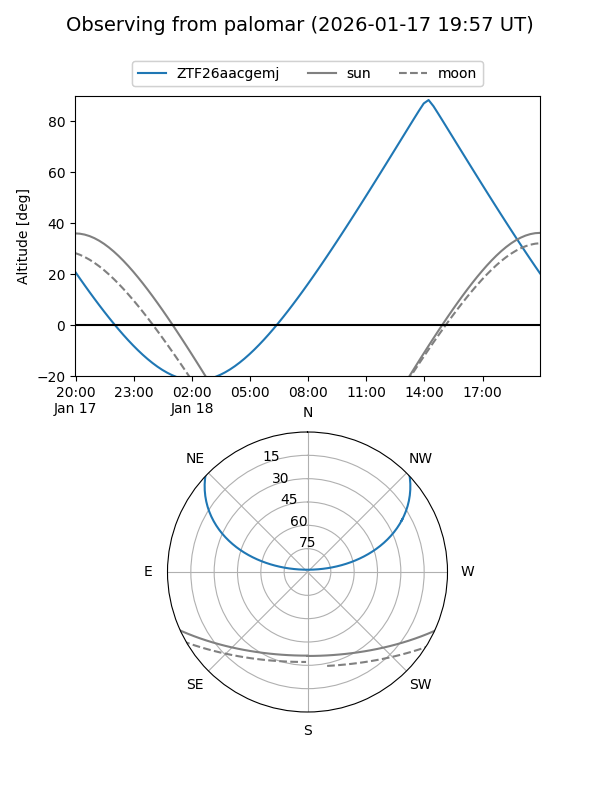

ZTF26aacgemj
Target ZTF26aacgemj at 2026-01-18 12:45
Aliases and brokers:
FINK: link
Lasair: link
ALeRCE: link
alt names
ZTF26aacgemj (ztf,fink_ztf)
Coordinates:
equatorial (ra, dec) = 213.3356,+34.94988
equatorial (HMS+DMS) = 14:13:20.54,+34:56:59.57
galactic (l, b) = (62.0491,+70.84015)
Flags:
Photometry:
last ztfr=20.30
1 ztfr detections
Lightcurve

Visibility


Additional plots